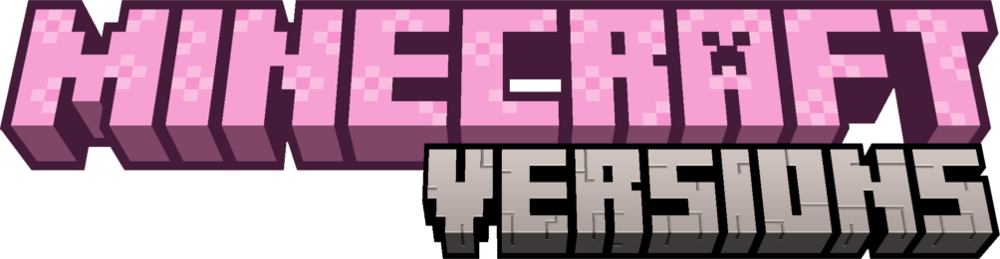

Tas ir programēšanas projekts kuras mērķis ir pastastīt spēlētājiem par visiem Minecraft vērsijam sākot no 1.0. Tā ir ļoti labi atcerēties ko kompānija Mojang pievienōja spēlei kopš 2011.gada. Pēc informācijas izlasīšanas, Jūs varat izpildīt testu un uzzināt cik labi pārzinat Minecraft pasauli. Ceram ka būs interesanti!